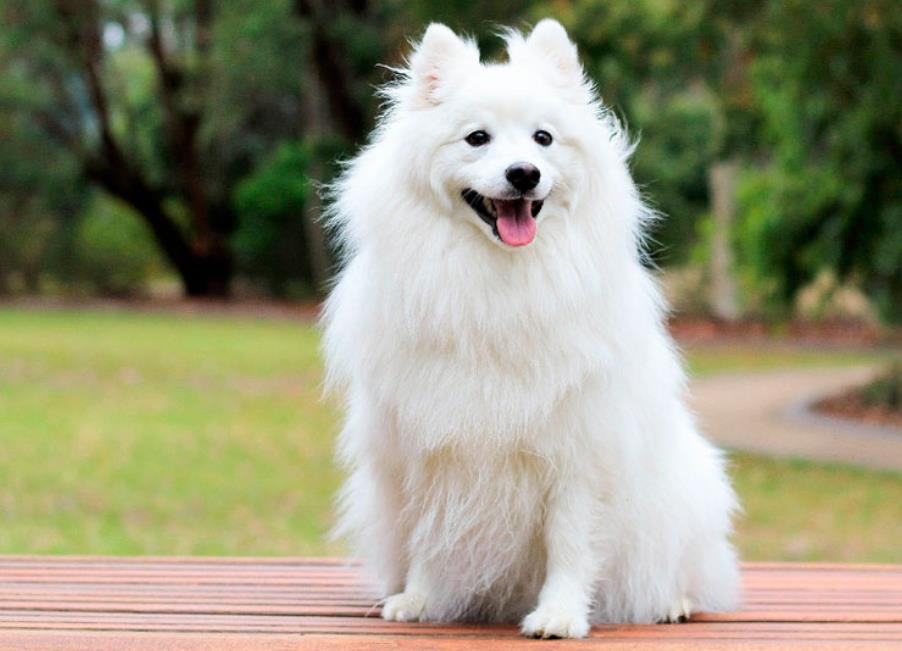

Декоративный Европейский шпиц, потомок немецких и померанских собак, выведенный в Италии. Порода самая немногочисленная в группе, еестоимость доходит до 70 000 рублей. Несмотря на то, что официально признали животных только к 1956 году, существовали они и в 10 веке, о чем свидетельствуют исторические холсты

Название с итальянского переводится как «лисичка», также собак называют дворцовыми и флорентийскими. Особи королевских кровей души не чаяли в миниатюрных песиках, поэтому место рождение Вольпино, определенно, – палаты замка
Эти Шпицы похожи на маленьких лисов, но имеют типичные черты породы: клиновидный череп, короткое тело квадратного формата, густая плотная шерсть (белого или рыжего окраса). Очесы формируют пышный воротник и «фонтан» хвоста. Конечности и морда покрыты коротким волосом. Вырастают Вольпино до 30 см (весят не более 4-х кг).
Несмотря на размеры, животные могут служить охранниками. Они очень активно реагируют на незнакомцев, призывая хозяев громким лаем. Порода неагрессивная, но шумная, любит гавкать, играть, бегать. С детьми собаки дружелюбны, обожают хозяев и всех домочадцев.